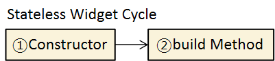
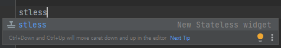
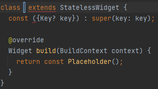

이전 포스팅 에서 얘기 했듯이 Flutter는 모든 것이 Widget으로 이루어져 있습니다.
Widget을 생성하기 위해서는 Stateful Widget 그리고 Stateless Widget 중 하나를 extends(상속) 받아야 합니다.
이번 포스팅에서는 Stateless Widget에 대해 공부한 내용을 정리해 보고자 합니다.
?INDEX
#1 Stateless Widget 생성하기
#1.1 Build Method
#1.2 Constructor
?Stateless Widget 내부의 Property는 final로 선언하자
#2 Stateless Widget Life Cycle
? Stateless Widget은 Immutable 하다.
#3 Stateless Widget Android Studio 단축키
?Log
2023.04.11 Stateless Widget Android Studio 단축키 내용 추가
Stateless Widget은 이름에서 유추할 수 있듯이, 상태 변화가 없는 Widget입니다. 즉, 한 번 UI가 그려지면 그 상태가 변하지 않습니다.
#1 Stateless Widget 생성하기
StatelessWidget Class를 상속 받으면 Stateless Widget 을 생성할 수 있습니다.
class MyApp extends StatelessWidget {
}
#1.1 Build Method
StatelessWidget은 필수적으로 Build Method를 override 하여 구현해야 합니다.
Build Method는 BuildContext 타입 context Parameter를 받아오며, Build Method 를 통해 위젯의 구조 그리고, 속성을 정의합니다.
class MyApp extends StatelessWidget {
@override
Widget build(BuildContext context) {
return ...
}
}
#1.2 Constructor
Constructor(생성자)는 필수는 아니지만, StatelessWidget 외부에서 값을 받아와 속성을 정의할 때 사용합니다.
Constructor를 정의하지 않으면 Default Constuctor가 자동으로 정의되며 구조는 다음과 같습니다.
const MyStatelessWidget({Key? key}) : super(key: key);
? Stateless Widget 내부의 변수는 final로 선언하자
Stateless Widget 내부에 변수를 선언하는 경우 final로 선언한 뒤, 생성자에 required keyword를 사용해 속성을 필수로 받아오게 하는 것이 좋습니다. 이는 OOP의 특성 중 하나인 불변성[Immutability]을 보장하기 위함인데, Stateless Widget은 어차피 한 번 생성되면 내부에 값이 변경되는 일이 없기에, final keyword로 변수를 모두 선언해 주면 프로그램의 안정성을 높이는 데 도움이 됩니다.
class MyApp extends StatelessWidget {
// property
final val1;
// constructor
const MyStatelessWidget({required this.val1,
Key? key,
}) : super(key: key);
// build method
@override
Widget build(BuildContext context) {
return ...
}
}#2 Stateless Widget Life Cycle

Stateless Widget의 내부 동작 Cycle은 매우 간단합니다. 먼저 Constructor가 호출되며 다음으로 build Method가 호출됩니다.
단, build Method는 Stateless Widget의 Life Cycle 도중 단 한 번 만 호출됩니다.
? Stateless Widget은 Immutable 하다.
그렇기에 Stateless Widget은 Immutable(불변) 하다는 특성을 가지고 있습니다. 앞에서 여러번 언급 했듯이 Stateless Widget에서 속성이 변경될 수 없으며, Stateless Widget 내부에서 Widget의 값을 변경하고자 한다면 기존의 Widget을 삭제하고 완전히 새로운 Widget을 생성 해야만 합니다.
따라서 속성이 변경 가능한 유동적인 Widget을 만들고자 한다면 Stateful Widget으로 선언해 주어야 합니다.(Stateful Widget에 대해서는 뒤에서 다룰 예정입니다.)
#3 Stateless Widget Android Studio 단축키
Android Studio에서 stless를 입력한 뒤 Enter를 누르면, 자동으로 Stateless Widget의 구조를 생성해 줍니다.

다음과 같이 위젯의 이름을 제외한 코드가 생성되는데, 생성할 위젯의 이름만 명시해 주면 손쉽게 Stateless Widget 코드를 작성할 수 있습니다.

class HomeScreen extends StatelessWidget {
const HomeScreen({Key? key}) : super(key: key);
@override
Widget build(BuildContext context) {
return const Placeholder();
}
}